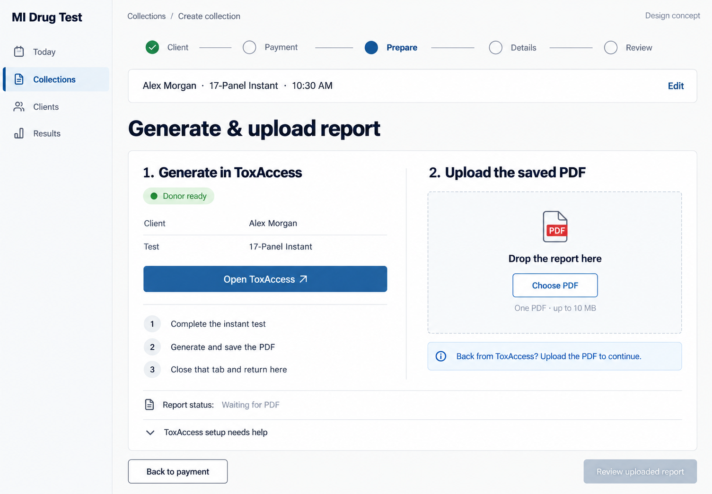
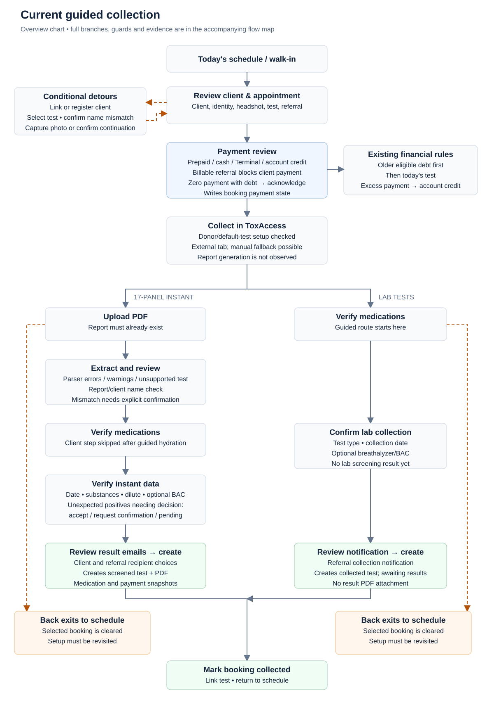

Generate & upload report
Instant
Shared start, two collection branches
Switch between the observed code flow and the proposed flow. Dashed paths show exceptions or recovery. On a narrow screen, scroll the chart sideways for readable labels.

The changes that matter
ToxAccess stays in another tab. When staff return, the screen still says Waiting for PDF until a file is attached. A focus event, tab closure, or Donor ready status never proves report generation. Extraction and name checks follow the upload.
| State | What staff see | What must remain true |
|---|---|---|
| Client owes | Clear amount due, amount received, cash/card/credit actions | Older eligible client balances first; zero payment with debt requires acknowledgement. |
| Today prepaid, no old client debt | No payment needed; $0 remaining; Add account credit collapsed | Continuation still preserves the existing payment/booking bookkeeping. |
| Today prepaid, older client debt exists | Today's test prepaid plus separate previous client balance | Do not imply the entire account owes nothing. |
| Credit available | Explicit Apply credit action | Available credit is not payment until applied; allocation behavior unchanged. |
| Invoice-enabled referral, switch ON | Referral will be invoiced; client due for this test is zero | Keep a per-test payer/referral snapshot; referral billing is not a paid status. |
| Same referral, switch OFF | Client pays this test; ordinary payment controls | Exclude this test from referral invoices even if unpaid; allow tracker follow-up payments. |
| Missing report | Generate and upload area; disabled Review uploaded report | Stay at the same booking. No guessed report readiness or repeated payment. |
| Parsing or client mismatch | Visible error/warning and report/client comparison | Retain severity and explicit acknowledgement; replacement invalidates stale confirmation. |
| Unexpected positive | Accept / request confirmation / decide later | Required decision/substances remain visible and server-validated. |
| Lab collection | Medications, date/test/BAC, referral notification | No negative result or instant PDF inferred; lab results arrive later. |
| Created test but email failed | Saved record plus delivery issue | Recover delivery without inviting duplicate creation. |
Simple steps, one fact in one place
Today shows appointments without the added Follow-up panel. Prepare shows client context and the generate/upload tasks, without medication content. Medications appear in their own verification checkpoint. Results use one compact labeled color strip and short decision choices; final review repeats only client/result context, then recipients and the report. Payment and full detail recaps are removed.
Green can mean negative or expected-positive; keep the label accurate. Yellow indicates a warning or pending review; red flags unexpected or critical findings. Loading or missing results never appear negative or ready. Classification and server checks remain unchanged.
Occasional edits stay available
Keep client, headshot, test, referral, medication and recipient edits. Test changes must reconcile payment and routing. Keep missing-client registration's existing five steps. Collapse optional test edits, diagnostics and prepayment; keep required errors, identity checks and confirmation choices expanded. Open the affected disclosure and focus its field when validation fails.
Instant reload currently resets the workflow. Full draft recovery is separate work; these concepts do not claim autosave.
Separate the changes by risk
- Interface and recoverable Back. Normalize titles/values, make prepaid payment optional, and return from collection entry to the same appointment's preparation. Retain validators, payment allocation and creation actions.
- Combined instant report screen. Reuse the existing upload form alongside ToxAccess instructions/link; remove one preparation screen. Keep extraction, medications, result verification and email review.
- Per-test payer backend. Persist responsibility on the booking and test, filter invoices and client allocation correctly, and update tracker payment rules. Expose the switch only with that complete backend contract.
Current baseline: 6 suites · 51 tests passed
The reviewed suites cover payment allocation, snapshots, schedule routing, report/client matching and referral invoices. They validate existing code, not the unimplemented proposals. No live collections, charges, emails, migrations, build or E2E run occurred.
First preserve the business checkpoints. Removing medication or final notification review is not recommended in this pass. Combining upload with extraction can be considered later once validation and recovery are characterized.
This is a design review. Source changes wait for the user's review. All proposals retain feature-branch PRs and required CI.